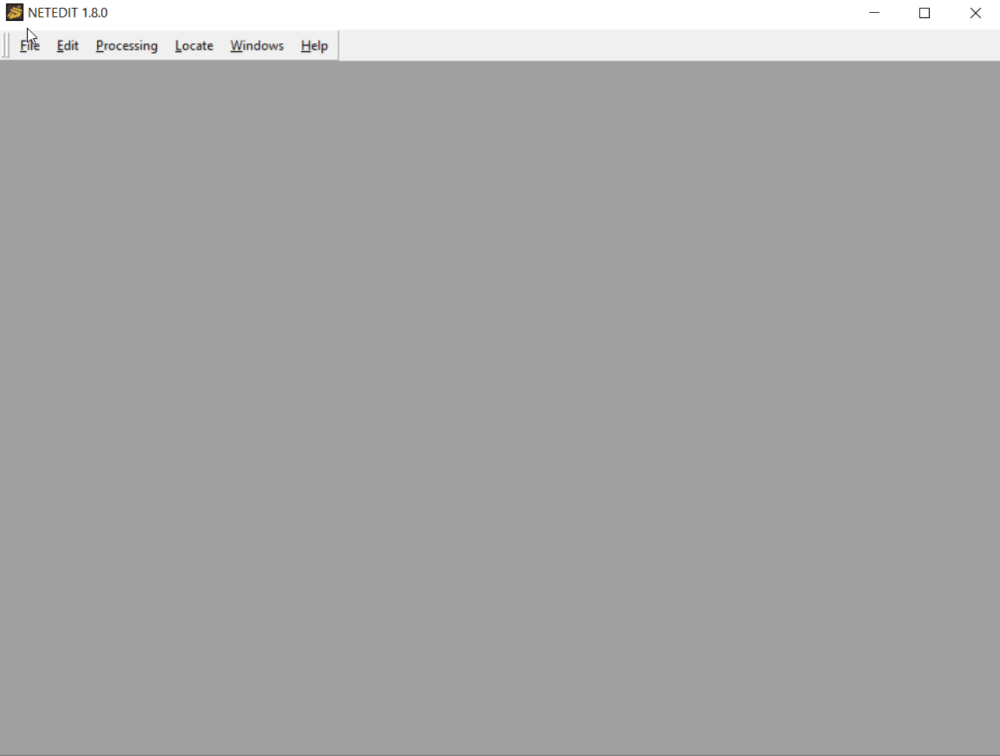
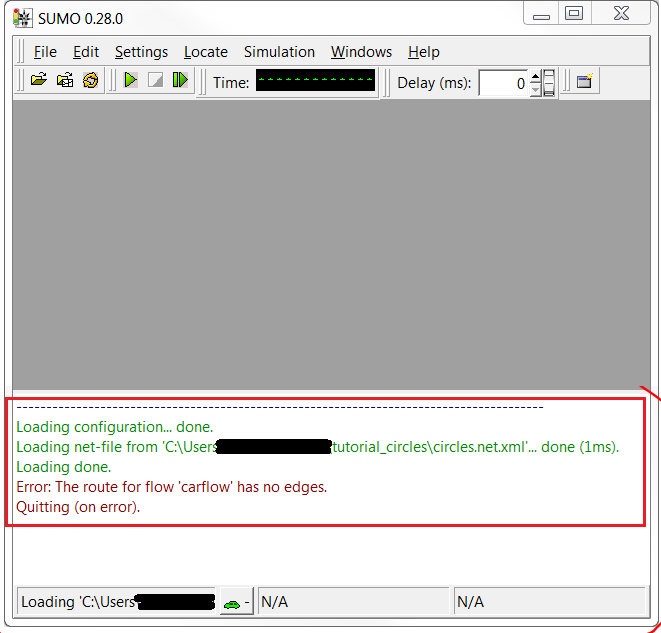
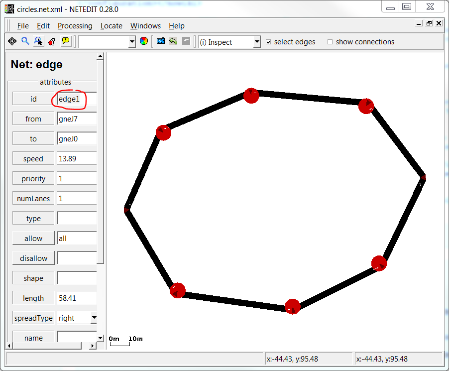
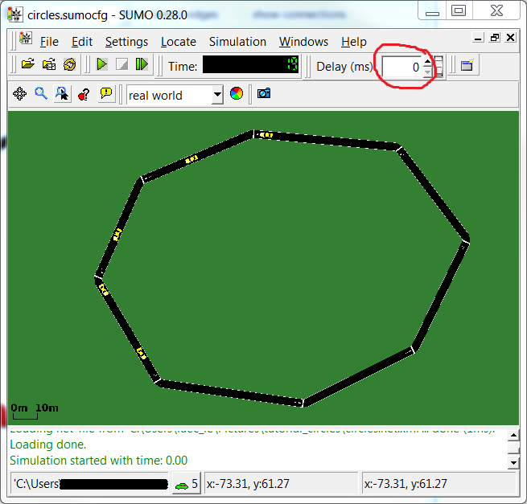
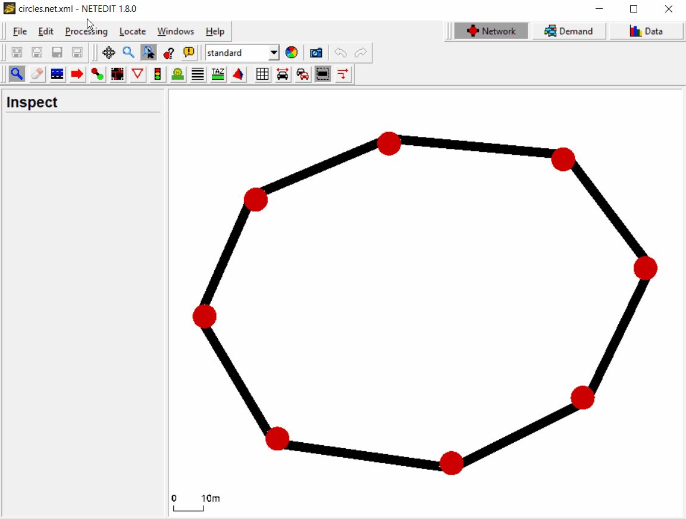
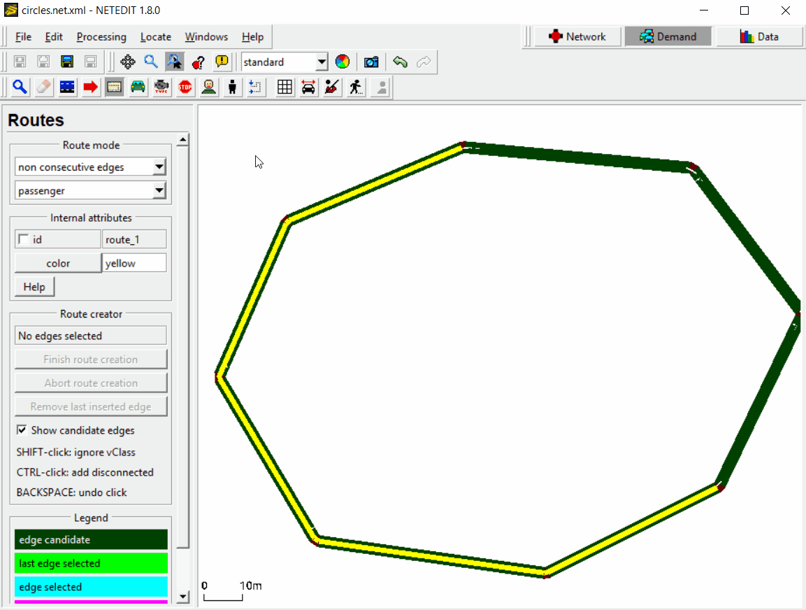
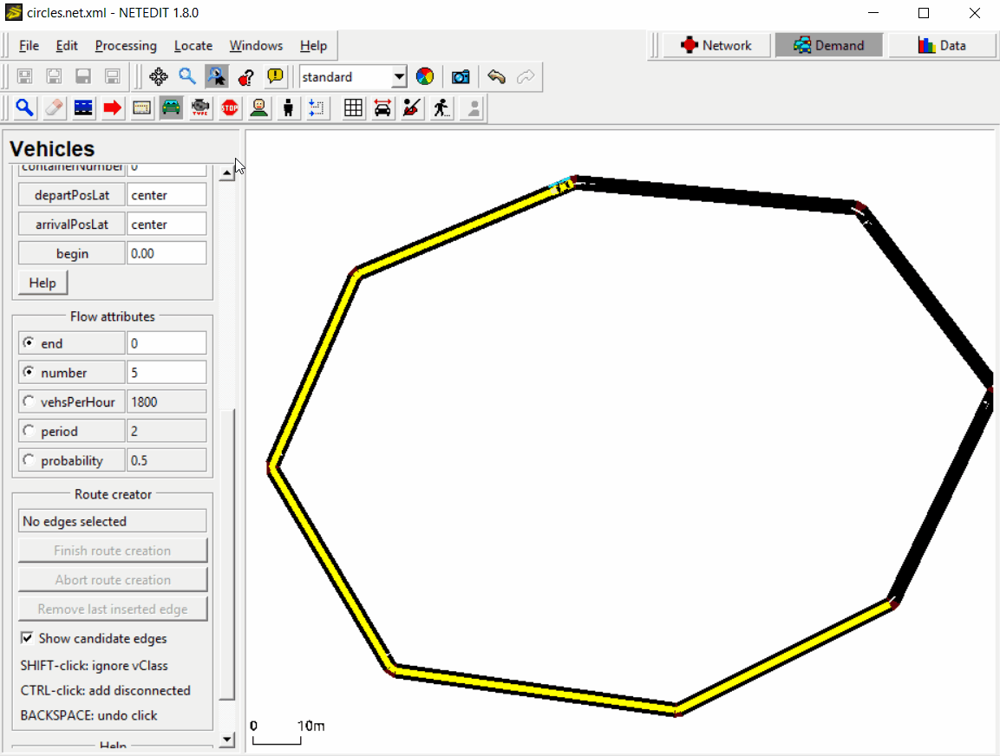
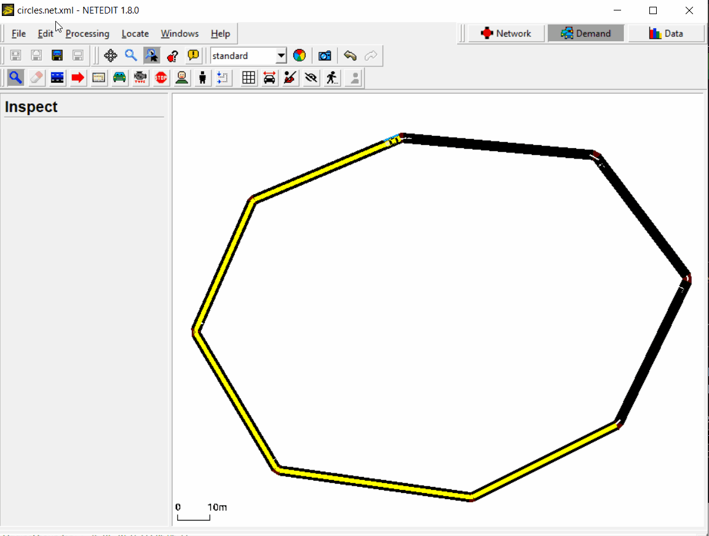
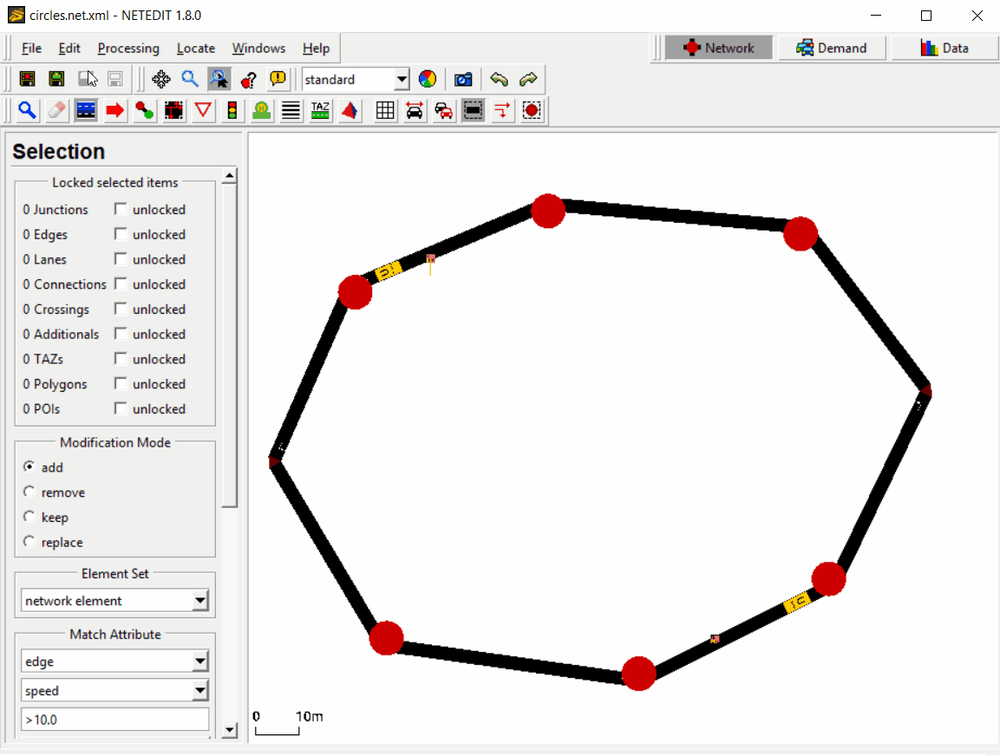
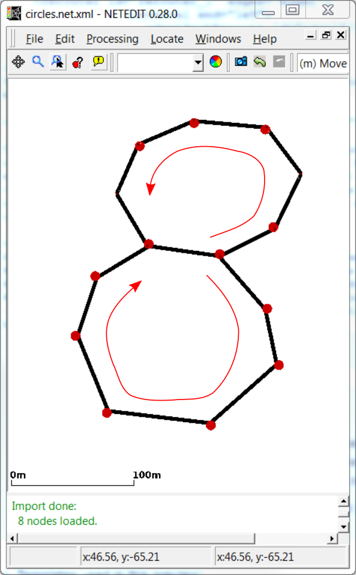

In this tutorial we will build a simple circular net with netedit and use rerouters to make vehicles drive in circles. All definition files can be found in the <SUMO_HOME>/docs/tutorial/circles directory.
This tutorial can be done using only netedit or you can generate the demand data by writing the XML-files yourself. Both methods are explained below.
Steps to follow using XML-Files#
Build a network#
Building a network with XML-Files is not recommended, so we will use
netedit for this step. First open netedit and create
edges to form a closed loop. To do that press Ctrl-N to create a new network
and then press e to enter the edge editing mode. Now create a closed loop of
edges (you might consider to check 'chain' just right from the edit-mode
selection, see figure).

The result should look more or less like shown in the figure. The
important thing is the circular shape. Now save the network somewhere
(Ctrl-Shift-S) in an empty directory (we will refer to that place by
baseDir). As name for the created net-file type in circles.net.xml.
Create vehicles and run SUMO#
In the baseDir create two empty text-files, call them
circles.rou.xml and circles.sumocfg. These files will define our
vehicles and the run configuration.
First, we edit circles.rou.xml and define a vehicle flow of five
standard passenger cars. The file contents should look like this:
<routes> <vType id="car" type="passenger" length="5" accel="3.5" decel="2.2" sigma="1.0"/> <flow id="carflow" type="car" beg="0" end="0" number="5"/> </routes>
For further explanation of how to define flows and vTypes see the respective Wiki-pages: Flow Definitions and Vehicle Types.
To use the route-file and the generated net-file with SUMO, we edit the
configuration-file circles.sumocfg to tell SUMO where it finds vehicle
and net definitions:
<configuration> <input> <net-file value="circles.net.xml"/> <route-files value="circles.rou.xml"/> </input> </configuration>
Now let us try to start sumo with the config that we have just created.
To do so either double-click on the configuration-file circles.sumocfg
(under Windows, if your installation was done with default settings) or
change to the baseDir in a terminal and start sumo (with graphical
user interface) there by typing sumo -c circles.sumocfg. (If this does
not start sumo, you might have to add the SUMO/bin directory to your
PATH or set the environment variable SUMO_HOME
(how to).

First attempt to run the simulation
Did it work? No.
Let us have a look at the Message Window at the bottom of the GUI (see figure above) to endeavor what went wrong (by the way: the Message Window is often a very useful resource for information for setting up a simulation take a look at it first, if you run into problems).
It says: Error: The route for flow 'carflow' has no edges. This means
that SUMO does not know from where to where the vehicles of the flow we
declared in circles.rou.xml should take. To do this, we need to add
attributes to and from, and provide corresponding edge-ids to the
flow.
The edge-ids can be inspected and modified in netedit: open your
network-file circles.net.xml and press i to enter the inspect-mode.
Left-click on an arbitrary edge and rename it to edge1 (see figure below).
Left-click on a different edge and rename it to edge2. Then save your network
(Ctrl-S).

Renaming an edge in netedit
Now we add the from-edge and the to-edge to the flow in
circles.rou.xml:
... <flow id="carflow" type="car" beg="0" end="0" number="5" from="edge1" to="edge2"/> ...
Let's try to run SUMO again. The window should now show the network you have created before in netedit (see figure below) and you can start the simulation by clicking on the play button () or the step button (). If you use , be sure to adjust the value for the animation delay time between consecutive simulation steps (the field labeled "Delay (ms):", see figure). Otherwise SUMO will run the simulation as fast as possible and you will probably see nothing happening at all. (Note that the figure uses the style "real world" from the representation-dropdown-menu in the toolbar.)

Running five cars on the circular net
The cars will drive from the beginning of edge1 to the end of edge2 and then leave the net (side remark: you can control the positions of departure and arrival by additional arguments to the flow, see Flow Definitions). The simulation ends when all vehicles have left the net.
Circular rerouting#
Now let us make the vehicles drive in circles around the track again and again. To this end we will create a rerouter.
Since in SUMO the additional elements are not considered as elements of
the net, we have to specify them in a separate file (the
"additionals-file"). Create and open a file circles.add.xml in the
baseDir and add the following xml-code (see Rerouter/Assigning a new
Destination
for details):
<additionals> <rerouter id="rerouter_0" edges="edge1"> <interval end="1e9"> <destProbReroute id="edge2"/> </interval> </rerouter> <rerouter id="rerouter_1" edges="edge2"> <interval end="1e9"> <destProbReroute id="edge1"/> </interval> </rerouter> </additionals>
Then we have to tell SUMO to include the rerouters into the simulation
by adding a line to the config circles.sumocfg. Within the <input> tag
add a child:
<additional-files value="circles.add.xml"/>
This will add two (destination-)rerouters to our network making the
vehicles go around the circle until the given end time (i.e., until one
hundred million seconds have passed). Effectively, each rerouter will
update the destination for each vehicle entering its edge (specified by
its edge-attribute) and set it to the edge given in the id-attribute
of the destProbReroute-element. So as soon as a vehicle enters edge1
(its current destination), its destination will be updated to edge2
and vice-versa, when entering edge2 it will be rerouted towards
edge1, thus following a circular route.

Circular rerouting
Steps to follow using netedit#
Build a network#
The steps to build the network in netedit were already explained above. Please come back when you have the network created to continue with the tutorial.
Create vehicles and run SUMO#
First we have to change the mode to "demand" by pressing F3 and then press
r for switch to "create route" mode. We can either choose to create a route by
clicking over "consecutive edges" or "non consecutive edges", which will find
the shortest path between the non consecutive edges given. For this test, we
will choose the last option. We can change the route "id" by clicking over the
id box. In this case, we will leave the default "id" route_0.
First we have to click over the first edge of our route (let's take one of the
upper edges) and then click over the last edge of the route (let's choose one
of the lower edges). An orange path connecting both edges has been created. To
create the route we have to press the "create route" button or the Enter key.
Route creation can be aborted using the "abort creation" button or pressing the
ESC key.

Create a route with netedit.
Now we have to create a flow of vehicles that will drive along this route. For
this, we press v to go to the vehicles mode and then select over the vehicles
list "flow (over route)". We leave the default values for "id" (flow_0) and
"begin" (0). If we scroll over the list we will find more flow attributes. In
this case we want to simulate 5 vehicles after each other, so we set 0 as
"end" and 5 as "number". To create the flow we just have to click over the
route we have created and a vehicle will appear at the beginning of the route.
As a last step, we have to save all demand elements created (route and flow) by
pressing Ctrl-Shift-D and enter the file name, in this case circles.rou.xml.

Create a flow with netedit.
After saving the route, we can run the simulation with sumo-gui by pressing
Ctrl-T. Change the delay (e.g. to 100) to be able to see the vehicles driving
and click the play button
(). As we can see, the
five vehicles drive from the first edge to the last one given and then
disappear. In the next step we will see how to make them drive in circles with
a rerouter.

Open sumo-gui.
Circular rerouting#
Let's go back to netedit to add a rerouter. First we change to the network mode
(F2) and then press a to enter the additional edit-mode. From the
"Additional element" drop-down menu on the left select rerouter. We need to
add two rerouters:
- The first rerouter will be placed on the last edge of our route and have
a
destProbReroute-element to the first edge of our route. So when the vehicles arrive to the last edge, they won't disappear, but will continue driving to the first edge and completing the circle.
- The second rerouter will be located on the first edge of our route and
have a
destProbReroute-element to the last edge. So when vehicles arrive at the first edge, they will be redirected to the last edge of the route where the first rerouter ist located and so the vehicles will be driving in circles again and again.
To add the first rerouter we have to check the "id" of the last edge of our
route by clicking over the edge with the right button. In this example the edge
id is edge2. Select the id over the list and click again, this time with the
left button, over the edge. The rerouter have been created. Now we have to add
a destProbReroute-element. Select the rerouter and click over it with the
right-button. Select "Open rerouter Dialog" over the list.
We click over the add button
() to add a new Interval. We
will leave the default interval (0 to 3600 seconds), but you can change it if
you want. Now we add a new destProbReroute by clicking over the add button on
the upper-right window. The first rerouter has to send the vehicles to the
edge1, so we have to change the default edge by double-clicking over it. Now
we just have to click accept twice and our rerouter is added.

Create the first rerouter.
Now don´t forget to add the second rerouter. For this we will follow the same steps but remember to replace the edges.
Once we have created both rerouters, we save them in an additional file by
pressing Ctrl-Shift-A and enter the file name, in this case circles.add.xml.
Now we can run the simulation again by pressing Ctrl-T to open sumo-gui and
click the play button ().
Now the vehicles are driving in circles until the end time given (3600 seconds).

Run simulation.
Exercises#
Here are some simple ideas to extend this toy example:

A net with two loops
- add more lanes in netedit and another vehicle flow with faster cars to observe SUMO's overtaking behavior.
- add a scooter flow and use the Sublane Model to observe SUMO's sublane model.
- add another loop (see figure) and trigger the next loop for each vehicle by a probabilistic choice of the destination (Rerouter/Assigning a new Destination), observe merging at the location where both loops are connected.
- Insert more vehicles, lower the simulation time-step length and try to observe stop-and-go waves, experiment with different car-following models, color the vehicles by speed.
If you create solutions for the exercises post them on this page!
Back to Tutorials